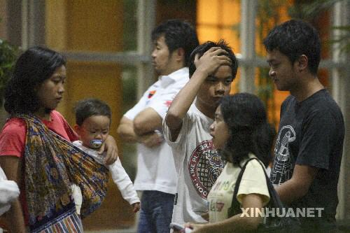

新闻主页 » 国际新闻
美国加州南部发生里氏4.5级地震
2016-10-02 17:00:16

新华网洛杉矶8月9日电(记者 高原)美国加利福尼亚州南部9日凌晨发生震感强烈的地震，在当地引发恐慌。
据美国地质测量局称，这次里氏4.5级的地震发生在当地时间9日零点58分，震中在洛杉矶市东北部约50公里的切茨沃斯镇，洛杉矶市中心和附近地区也有明显震感。此后又发生了数次余震。
当地警方称，据初步调查，地震造成当地一座桥梁和多处房屋出现裂缝，被损坏的桥梁已被关闭.目前没有人员伤亡的报道。
据震区居民反映，他们是在睡梦中被惊醒的，当时房屋晃动，家中物品纷纷落在地上，数千辆汽车的报警器在震动后发出狂叫。
地震专家称，这是自1994年洛杉矶地区发生6.7级大地震以来，加州南部发生的最强烈地震。1994年的地震造成72人死亡，1万多人受伤，财产损失达125亿美元。
据美国地质测量局称，这次里氏4.5级的地震发生在当地时间9日零点58分，震中在洛杉矶市东北部约50公里的切茨沃斯镇，洛杉矶市中心和附近地区也有明显震感。此后又发生了数次余震。
当地警方称，据初步调查，地震造成当地一座桥梁和多处房屋出现裂缝，被损坏的桥梁已被关闭.目前没有人员伤亡的报道。
据震区居民反映，他们是在睡梦中被惊醒的，当时房屋晃动，家中物品纷纷落在地上，数千辆汽车的报警器在震动后发出狂叫。
地震专家称，这是自1994年洛杉矶地区发生6.7级大地震以来，加州南部发生的最强烈地震。1994年的地震造成72人死亡，1万多人受伤，财产损失达125亿美元。
» 新闻点评